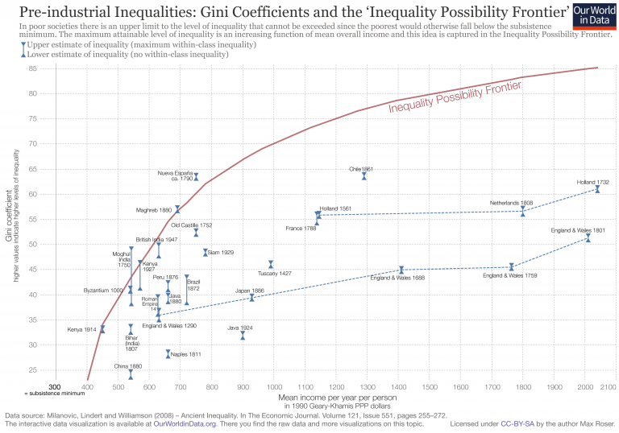

In an effort to answer this question Milanovic, Lindert and Williamson investigated the estimates for levels of pre-industrial inequality in their 2008 paper ‘Ancient Inequality’. Most of their estimates (18 of the 28) of pre-industrial inequalities are based on so-called ‘social tables’. In these tables, social classes (or groups) ‘are ranked from the richest to the poorest with their estimated population shares and average incomes’.1
The following graph demonstrates the level of economic inequality in pre-industrial societies in relation to the levels of prosperity in those same societies. Inequality is measured with the Gini index (explained below) and prosperity is measured by the gross domestic income per capita, adjusted for price differences to make comparisons in a common currency possible.
The graph also shows a curve labelled IPF; this is the Inequality Possibility Frontier. The idea behind this curve is that in a very poor society inequality cannot be very high: Imagine if the average level of income were just the bare minimum to survive, in such an economy there could not possibly be any inequality as this would necessarily mean that some people have to be below the minimum income level on which they could survive.
When average income is a little higher it is possible to have some small level of inequality, and the IPF shows how the maximum possible inequality increases with higher average income. The authors found that many pre-industrial societies are clustered along the IPF. This means that in these societies, inequality was as high as it possibly could have been.
In the cases of Holland and England, we see that during their early development they moved away from the IPF and the level of inequality was no longer at the maximum.
